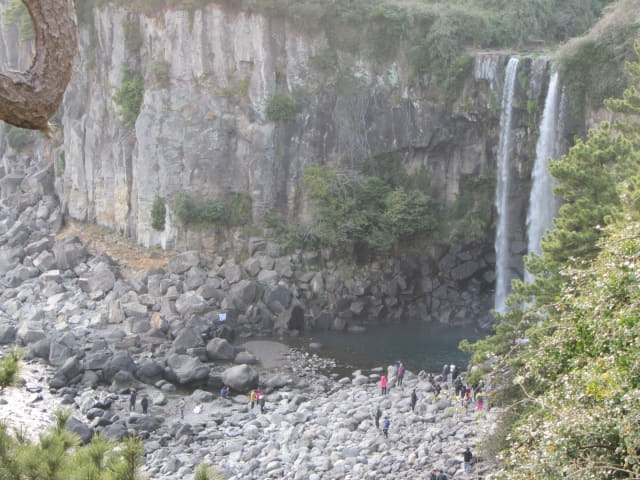
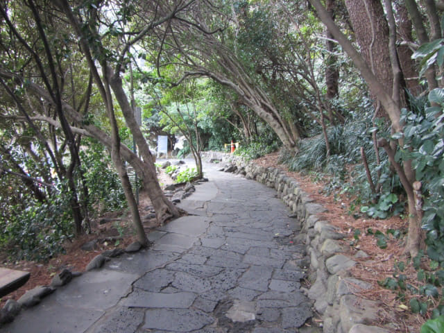

從西面古色古香的牌樓進入徐福公園, 遊覽了二十分鐘, 接著從東面的石做牌樓離開, , 就這樣匆匆遊覽完徐福公園。繼續沿牌樓前步道向前走一會, 便來到瀛洲十景之一的正房瀑布入口。
正房瀑布 (정방폭포 Jeongbang Waterfall)
正房瀑布與天地淵瀑布及天帝淵瀑布並列為濟州島三大瀑布。正房瀑布高23米, 是亞洲唯一直接流入海中的海岸瀑布, 更有瀛洲十景之一的美譽。
據說正房瀑布的懸崖上刻有「徐市過之」四個大字, 而西歸浦的名稱也是取自徐福由此西歸回國之意。
正房瀑布的門票是最抵消費 – 每位 2,000韓元。她看見那麼高, 不想走下去, 便只買了一張門票。

其實售票處旁的展望台已經可以俯瞰正房瀑布, 景色也不錯的, 只是感受不到那現場的震撼。很多旅客都在這裡拍照, 到此一遊便算了。

接著沿售票處旁的樓梯往下走, 驗票口原來在第一段的樓梯下面。
沿途都看到正房瀑布。
還看到石灘上的海鮮攤檔, 海女在這裡販賣剛從海中捕獲的海產。
沿石級一直往下走。

走下石級, 來到山下, 已隱約聽到「沙沙」的浪聲和「隆隆」的水聲, 正房瀑布就在前面了。接著穿過樹林間的平坦步道。

石灘上的海鮮攤檔就在左邊。
再向前走一會, 兩道瀑布彷彿從天而來, 從高處直沖而下, 如水銀瀉地般打在湖邊的石上, 水花四濺, 發出「隆隆」巨響, 景色既優美, 又震撼。
瀑布瀉落懸崖下的湖後, 便流入旁邊的大海。
抬頭望望剛才從山崖上售票亭走來的階梯。哈哈~~ 看到她在售票亭旁的展望台拍照。
在正房瀑布附近的石灘流連了一會, 便循原路離開, 沿石級一直往上走, 在驗票口轉左, 從另一道樓梯返回山上的出口, 就這樣遊覽完正房瀑布, 而今天的西歸浦行程也全部順利完成。